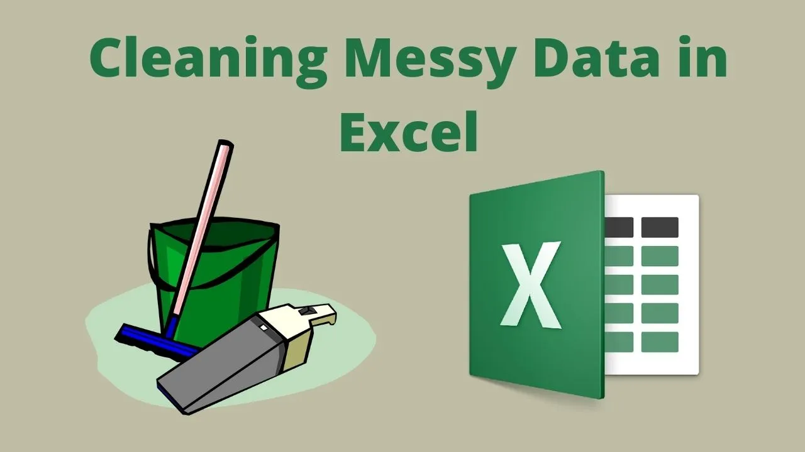
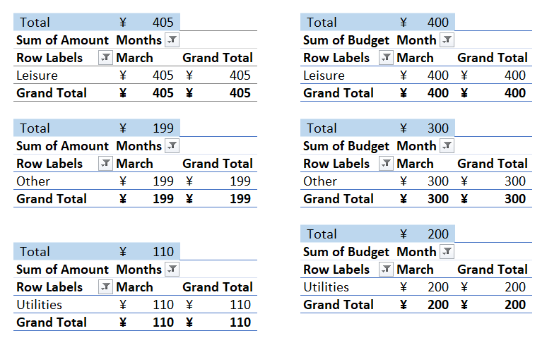
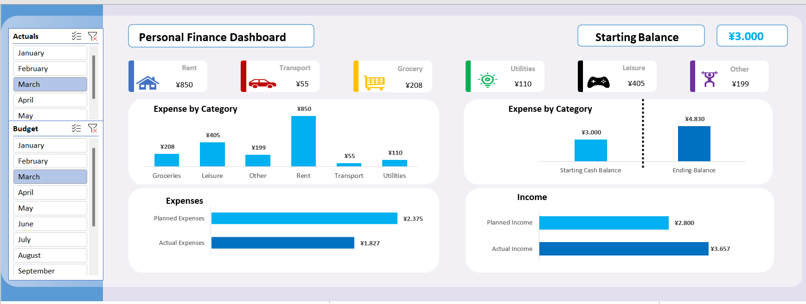
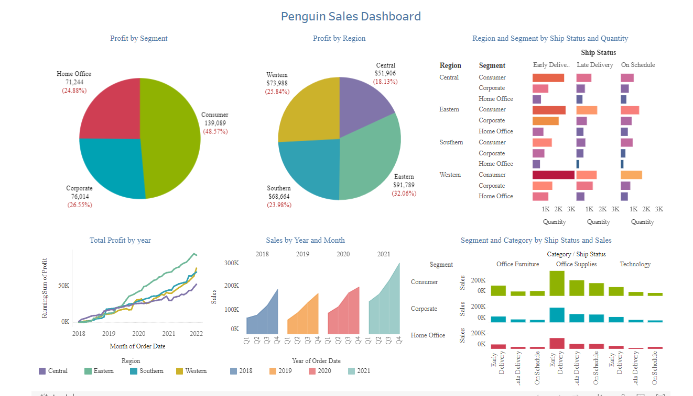

In this project, I used Excel
to import and clean data in Excel. Cleaning data is one of the most
important skills needed in Excel. I also looked at various formulas and functions
needed to clean data in Excel, I then moved on to using Power Query to import, combine, and
clean up data.

In this Project, i created several Pivot Chart analyzing transactions between my budget and my Actual over a year and used pivot table to calculate how i'm actually spending the money.
I also calculated at different months how much money left after my actual spending and compare it with the targeted budget. I created databars tracking my budget vs my actual expenses by categories such as transport, groceries, leisure etc.

In this Project, I build a personal finance budget dashboard from scratch using pivot tables to make it dynamic.
First, I input transactions either as an expense or income. Then, using pivot tables and conditional formatting, I created databars tracking my budget vs my actual expenses by categories such as transport, groceries, leisure etc.
Thirdly, I to created dynamic charts with pivot tables such as a column chart and a bar chart.
Lastly, I inserted slicers to make the dashboard interactive such that I can change the months I want to see.

In this Project, I took the raw housing data and transform
it in SQL Server to make it more usable for analysis.
I did some cleanig querries such as standardizing the date and remove hh:mm:ss, Breaking out Owner Address into Individual Columns (Street, City, State) and many more querries

In this project, I created a Penguin Sales Dashboard from scratch. After Exploring the data and adding some calculated fields,
I created two detailed pivot charts with Profit by Segment and Profit by Region respectively showing both the amount in dollars as well as in percentage.
Lastly, I created different types of bar charts detailing every category and created a line chart showing the running sum of profit over the time interval.

In this project we scrape data from Amazon to analyze price data for products.